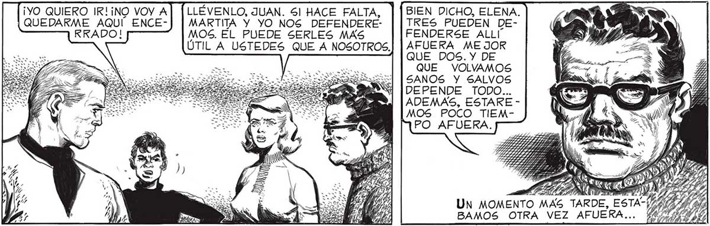
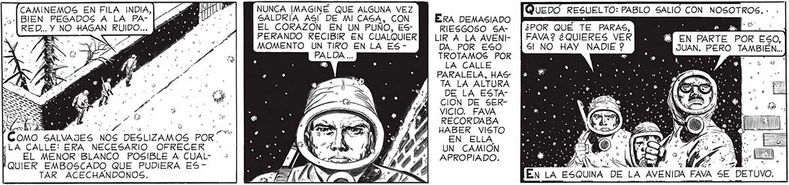
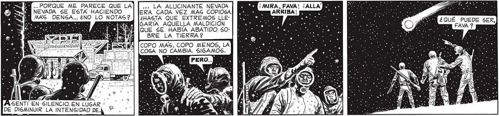

¡YO QUIERO IR! ¡NO VOY A| [LLÉVENLO, JUAN. 51 HACE FALTA, BIEN DICHO, ELENA. QUEDARME AQUÍ ENCE-] | MARTITA Y YO NOS DEFENDERE- | | TRES PUEDEN DEMOS. EL PUEDE SERLES MAS FENDERSE ALLI ÚTIL A USTEDES QUE A NOSOTROS.| | AFUERA ME JOR QUE DOS. Y DE QUE VOLVAMOS SANOS Y SALVOS DEPENDE TODO... ADEMAS, ESTARE |MOS POCO TIEMPO AFUERA. PASO POR FIN AQUEL INACABABLE PRIMER DÍA DE LA NEVADA MORTAL. SE HIZO NOCHE, Y ENTONCES NOS APRESTALO MEJOR SERA QUE PABLO SE QUEDE. SABE DE ARMAS, Y LLEGA: DO EL CASO, ÉL_PODRA' DÉFEN- 3/11 > A DER LA CASA. aros So ESOS NX Ni €SKÍEIOSG A DN SS A r Ge TT AÑ o po > > SS CAMINEMOS EN FILA INDIA, > AS NUNCA IMAGINÉ QUE ALGUNA VEZ ÁBIEN PEGADOS A LA PA- > "E SALDRÍA ASÍ DE MI CASA, CON ERA DEMASIADO RED.. Y NO HAGAN RUIDO... JAM 20 EL CORAZON EN UN PUÑO, ES- RIESGOSO SA- |¿POR QUÉ E PARAS, > SS PERANDO RECIBIR EN CUALQUIER LIRA LA AVENI- | FAVA2 ¿QUIERES VER MOMENTO UN TIRO EN LA ES - DA. POR ESO 5! NO HAY NADIE 2 TROTAMOS POR : LA CALLE PARALELA, HASTA LA ALTURA DE LA ESTACION DE SERVICIO. FAVA RECORDABA S e HABER VISTO ! e y PE Sr EN ELLA Í«LA CALLE: ERA NECESARIO OFRECER - AS > IIS UN CAMION ij EL MENOR BLANCO POSIBLE A CUAL- « ts a / 2] APROPIADO. FQUIER EMBOSCADO QUE PUDIERA ES- > y d 4 TAR ACECHANDONOS. JW... PORQUE ME PARECE QUE LA] | ... LA ALUCINANTE NEVADA ¡AMRA, FAVA! ¡ALLA Y NEVADA SE ESTA HACIENDO ERA CADA VEZ MAS COPIOSA] MOM g ARRIBA! MY MAS DENSA. ¿NO LO NOTAS? | (¿HASTA QUE EXTREMOS LLE- | E + yy NS AENA [oSARÍA AQUELLA MALDICIÓN QUE SE HABÍA ABATIDO $0BRE LA TIERRA 2 COPO MAS, COPO MENOS, LA COSA NO CAMBIA. SIGAMOS. A SENTI EN SILENCIO. EN LUGAR * DE DISMINUIR LA INTENSIDAD DE.


